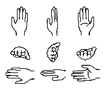
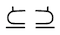
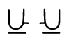
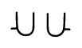
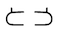
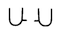
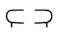
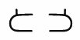
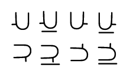

This page provides a side-by-side comparison of palm orientation representations in both ASCII-based and symbol-based writing systems for ASL.

The tables below compare the different approaches of several writing system in recording each of 10 basic palm orientations. The leftmost column shows the way palm orientation is written in Symbol Font For ASL. In each column, the orientation is written along side (or incorporated into) the symbol for a basic, thumb out 'B' handshape so you can see how handshape and orientation are related in each system.
Symbol Comparison Table
| Writing System: |
SN |
ISWA |
HNS |
SF * |
ASLP ** |
ASLO |
si5s *** |
SLIPA |
ASLSJ |
SS |
This page |
Approx. Number
of Orientations
Differentiated: |
12 |
60 |
144 |
6-36 |
n/a |
4-5 |
12-48+ |
12 |
24 |
5 |
24
(10 most common
shown) |
* Instead of orientation, SignFont specifies a "contacting region" on the hand in conjunction with a location (which could be an imaginary plane). In the table below, the SignFont examples use an imaginary plane and a contacting region to record how the hand rotated. Two examples are given for each orientation, but each conveys a different aspect of the orientation.
** ASLphabet does not represent palm orientation.
*** si5s is written on paper, so it allows unlimited precision of rotation within the drawing plane. Perpendicular to the drawing plane si5s can represent four directions of rotation.
Palm Facing Center Line (Neutral "clapping" orientation)
Orientation
(L & R) |
Gloss |
SN |
ISWA
(L & R) |
HNS |
SF |
ASLO * |
si5s
(Neutral space)
(L & R) |
SLIPA |
ASLSJ |
SS * |
| B%` `%B |
Fingers forward,
Thumb up,
Palm toward center |
Ḃ⊥ |
|
|
bP!NQ
or
bP(NS |
BL |
 |
B\u(s) |
bso |
b |
| B'. .'B |
Fingers up,
Thumb toward body,
Palm toward center |
Ḃ^ |
|
|
bP!NQ
or
bP(NZ |
BL |
 |
B\u(s) |
bsu |
b |
* This orientation is considered the default and is not written in ASL Orthography or SignScript.
Palm Facing Up
Orientation
(L & R) |
Gloss |
SN |
ISWA
(L & R) |
HNS |
SF |
ASLO |
si5s
(Neutral space)
(L & R) |
SLIPA |
ASLSJ |
SS |
| B`~ ~`B |
Palm up,
Fingers forward,
Pinky toward center |
Ḃ⊥ɑ |
|
|
bP!NZ
or
bP&NQ |
^BL |
 |
B\h(a) |
buo |
b) |
| B`- -`B |
Palm up,
Thumb forward,
Fingers toward center |
Ḃ<ɑ |
|
|
bP!NZ
or
bP(NQ |
^BL |
 |
B\h(a) |
bus |
b) |
Palm Facing Down
Orientation
(L & R) |
Gloss |
SN |
ISWA
(L & R) |
HNS |
SF |
ASLO |
si5s
(Neutral space)
(L & R) |
SLIPA |
ASLSJ |
SS |
| B~. .~B |
Palm down,
Fingers forward,
Thumb toward center |
Ḃ⊥ɒ |
|
|
bP!NV
or
bP%NQ |
vBL |
 |
B\b(a) |
bdo |
b( |
| B.- -.B |
Palm down,
Thumb toward body,
Fingers toward center |
Ḃ< |
or
|
|
bP!NV
or
bP(NQ |
vBL |
 |
B\b(t) |
bds |
b( |
Palm Facing Signer
Orientation
(L & R) |
Gloss |
SN |
ISWA
(L & R) |
HNS |
SF |
ASLO |
si5s
(Neutral space)
(L & R) |
SLIPA |
ASLSJ |
SS |
| B`= =`B |
Palm in,
Thumb up,
Fingers toward center |
Ḃ<ɑ |
|
|
bP!NR
or
bP(NQ |
<BL |
 |
B\u(t) |
bis |
b+ |
| B." ".B |
Palm in,
Fingers up,
Pinky toward center |
Ḃ^ɑ |
|
|
bP!NR
or
bP&NQ |
<BL |
|
B\u(t) |
biu |
b+ |
Palm Facing Away From Signer
Orientation
(L & R) |
Gloss |
SN |
ISWA
(L & R) |
HNS |
SF |
ASLO |
si5s
(Neutral space)
(L & R) |
SLIPA |
ASLSJ |
SS |
| B". ."B |
Palm out,
Fingers up,
Thumb toward center |
Ḃ^ɒ |
|
|
bP!NS
or
bP%NQ |
>BL |
|
B\u(a) |
bou |
b_ |
| B.= =.B |
Palm out,
Thumb down,
Fingers toward center |
Ḃ<ɒ |
|
|
bP!NS
or
bP(NQ |
>BL |
|
B\u(a) |
bos |
b_ |
Explanation
Each system takes a different approach to representing orientation, so the information conveyed by each column above is by no means equivalent. Here is an explanation of what the symbols mean.
Stokoe Notation provides 6 symbols that can be used as subscripts of the handshape symbols to indicate the "finger pointing" direction, and two symbols that can be added to indicate the palm facing. Learn more
- ʌ
- Up
- v
- Down
- <
- Toward Center
- >
- Away From Center
- ⊤
- Toward Signer
- ⊥
- Away From Signer
- ɑ
- Wrist Clockwise
(Counter-clockwise for left hand)
- ɒ
- Wrist Counter-Clockwise
(Clockwise for left hand)
For every possible handshape, SignWriting provides 48 unique symbols per hand (left/right) for representing palm orientation. However, a few handshapes have symbols that are symmetrical (o and
s
for example) so some orientations cannot be visually distinguished from one another. Most handshapes are asymmetrical (1,
a,
c, etc) and don't have this issue.
The table below shows the SignWriting orientations of a B handshape with the thumb out to the side.
The darkened areas represent the back of the hand. Learn more
| Palm up |
Thumb up* |
Palm down |
Palm in
(Toward Signer) |
Thumb in*
(Toward Signer) |
Palm out
(Away From Signer) |
L R
|
L R
|
L R
|
L R
|
L R
|
L R
|
| Top-down view |
Top-down view |
Top-down view |
Signer's view |
Signer's view |
Signer's view |
* Right-hand thumb-up symbols may also be used to show the left hand with the thumb down, and vice versa. In the same way, thumb-in symbols can be used to show thumb-out orientations.
Altogether SignWriting allows the each hand to be "pointed" (changing the finger direction) one of 14 different directions (6 orthogonal and 8 diagonal) and then "rotated" (changing the palm direction) one of 4 different ways.
{% comment %}
Right hand orientations - wall plane
Fingers→
Palm↓ |
Up-left |
Up |
Up-right |
Right |
Down-right |
Down |
Down-left |
Left |
| CW 90° | | | | or | | | | or |
| Neutral | | | | or | | | | or |
| CCW 90° | | | | or | | | | or |
| CCW 180° | | | | or | | | | or |
Right hand orientations - floor plane
Fingers→
Palm↓ |
Forward-left |
Foward |
Forward-right |
Back-right |
Back |
Back-left |
| CW 90° | | | | | | |
|---|
| Neutral | | | | | | |
|---|
| CCW 90° | | | | | | |
|---|
| CCW 180° | | | | | | |
|---|
{% endcomment %}
HamNoSys uses one of 18 symbols to specify the "finger pointing" direction of an orientation (6 orthogonal and 12 diagonal), and one of 8 symbols to specify the direction the palm faces. These symbols are written after the handshape in this order: finger direction, palm direction. Orientation is not written differently for the left versus right hand. Learn more
Hand Pointing Directions
-
- In
(toward center)
-
- Out
(away from center)
-
- Up-in
-
- Up
-
- Up-out
-
- Down-in
-
- Down
-
- Down-out
-
- Forward-in
-
- Forward
-
- Forward-out
-
- Back-in
-
- Back
-
- Back-out
-
- Up-back
-
- Up-forward
-
- Down-back
-
- Down-forward
The additional line represents the signer's body.
Palm Rotation Directions
The meaning of these symbols changes slightly based on the "pointing" direction of the hand.
-
- Palm In (toward center)
-
- Palm Out (away from center)
-
- Palm up-in
-
- Palm up
-
- Palm up-out
-
- Palm down-in
-
- Palm down
-
- Palm down-out
The dark side of the circle represents the palm.
{% comment %}
SignFont does not specify hand orientation explicitly, but instead uses contact region symbols to indicate what part of the hand touches the location. For signs that do not involve any contact, there are also locations symbols for imaginary horizontal and vertical planes.
Contacting regions can provide enough information to make a sign recognizable even though rotation in at least one axis is always left ambiguous.
Contacting Regions
- &
- The pinky side of the hand
- %
- The thumb side of the hand
- !
- The palm side of the hand
- "
- The back side of the hand
- (
- The finger end of the hand
Locations on Imaginary Planes
- NV
- Top side of the floor plane
- NZ
- Underside of the floor plane
- NS
- Near side of a wall plane
- NR
- Far side of wall plane
- NQ
- The dominant side of a side-wall plane
- NX
- The opposite side of a side-wall plane
ASL Orthography uses 4 symbols (preceding the associated handshape symbol) to indicate palm orientation, but the precise rotation of the hand is not conveyed. Learn more
- ^
- Up
- v
- Down
- <
- Toward Signer
- >
- Away From Signer
Since si5s is designed to be written on paper, it benefits from the flexibility to draw handshape symbols at any angle in 2 dimensions. Symbols can also be drawn mirror-image to represent a 180 degree rotation of the palm. A diacritic can be used to give additional information about the hand's three dimensional orientation.

Diacritics
An underline at the base of handshape symbol indicates that the hand is turned "on edge", that is, the wrist is rotated 90 degrees from the orientation the symbol would otherwise represent, or perpendicular to the drawing plane. Learn more
Perspectives For Each Location
In si5s, palm orientation is written differently depending on the point-of-view of the sign, whether it is written from the signer's perspective, from a side view, or from the front view. The point of view is determined by the location of the sign.
- Signer's perspective
- Neutral space
- Front view
- Forehead
- Chin
- Neck
- Shoulders
- Arm
- Waist
- Side view
- Back of the head
- Face
- Chest
- Knee
SLIPA relies on context for most orientation information (by specifying location and the contacting region of the hand), but includes a system of superscripts for indicating hand orientation as well.
SLIPA provides a character for each of 4 possible "wrist bend" positions, and each of 3 possible wrist rotations. This defines 12 different directions that the hand can point, relative to the lower arm, in terms of a two-part description of the wrist rotation necessary for the hand to point each direction. The third axis of rotation is left ambiguous. Learn more
Wrist Bend
- Unbent wrist:
- u
- Bent wrist:
- b
- Very bent wrist:
- v
- Wrist bent backwards (hyperextended):
- h
Wrist Rotation
- Facing away:
- (a)
- Facing towards:
- (t)
- Facing sideways:
- (s)
These modifiers are added to a handshape as superscripts, so that B with an unbent wrist, palm facing away from the body, would be written: Bu(a)
ASL SignJotting usesand one of 6 letters to specify the "palm facing" direction of an orientation, and one of 6 letters to specify which way the fingers point. These letters are written after the handshape in this order: palm direction, finger direction. Orientation is not written differently for the left versus right hand.
For any given palm facing direction, that direction cannot also be the finger pointing direction, and neither can its opposite. This leaves 4 valid "rotations" per palm direction, or 24 total possible orientations. Learn more
- Up
- u
- Down
- d
- In (Toward Signer)
- i
- Out (Away From Signer)
- o
- Opposite (Toward Center)
- s
- Near (Away From Center)
- r
SignScript defines 5 categories of palm orientation. The default orientation is not written (palm toward center). For the other four, the orientation symbol is written after the handshape. Learn more
- Palm up
- )
- Palm Down
- (
- Palm In (Toward Signer)
- +
- Palm Out(Away from Signer)
- _
See also: